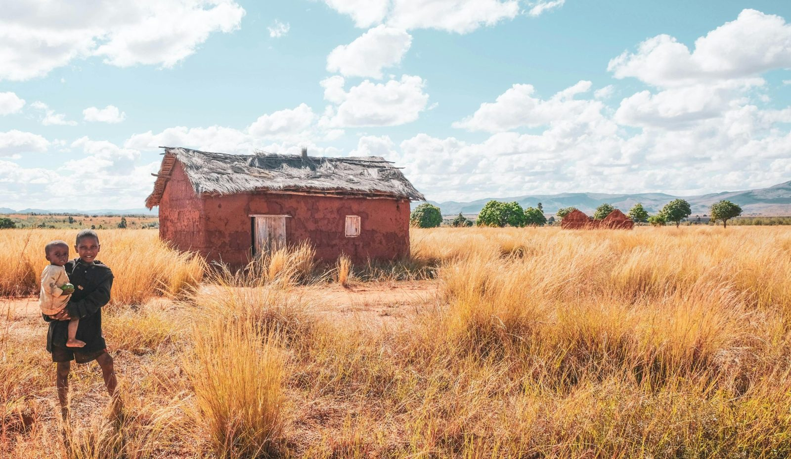
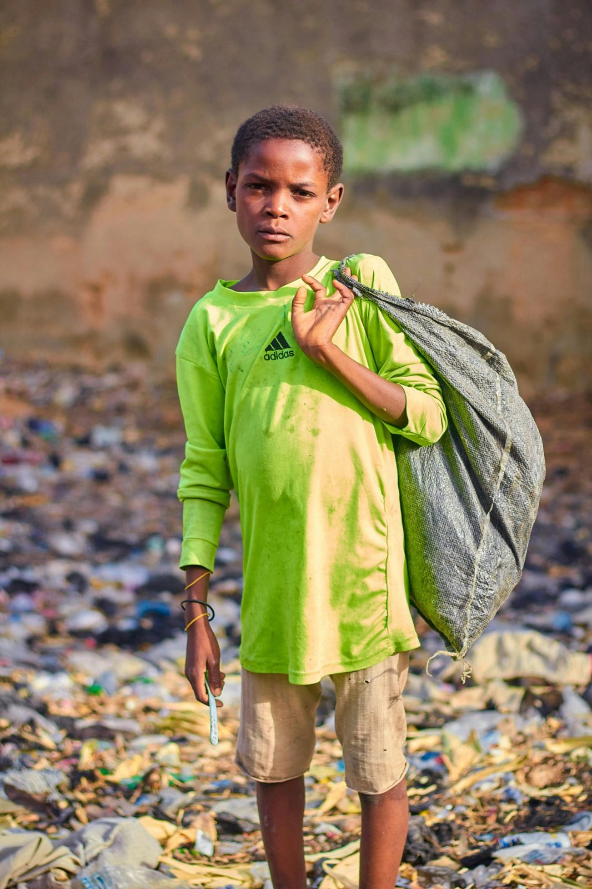
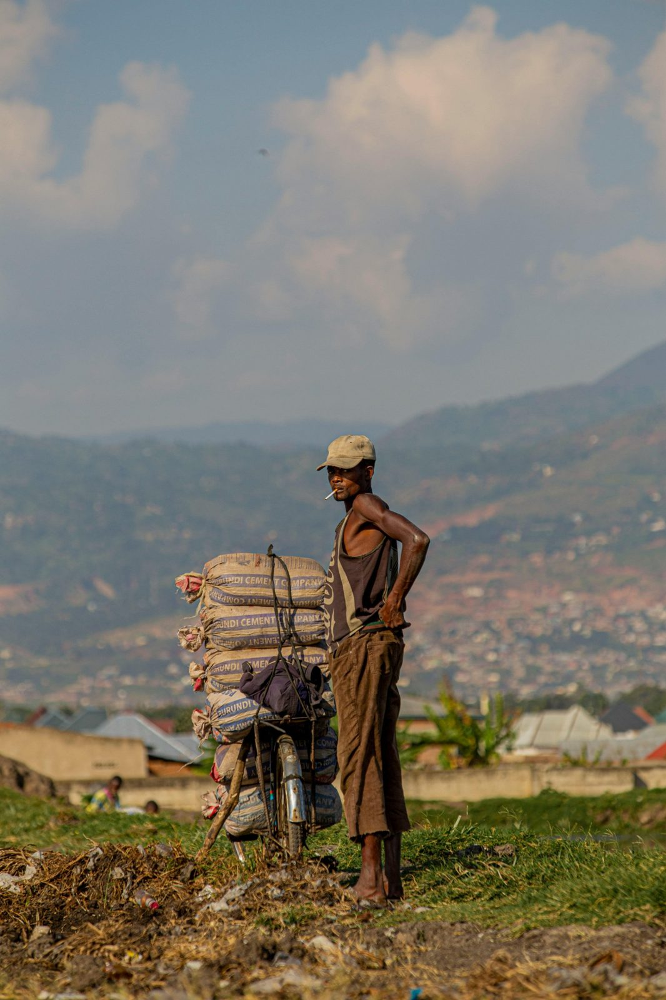
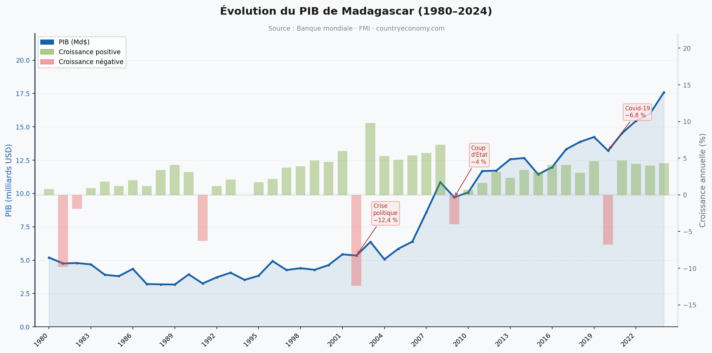
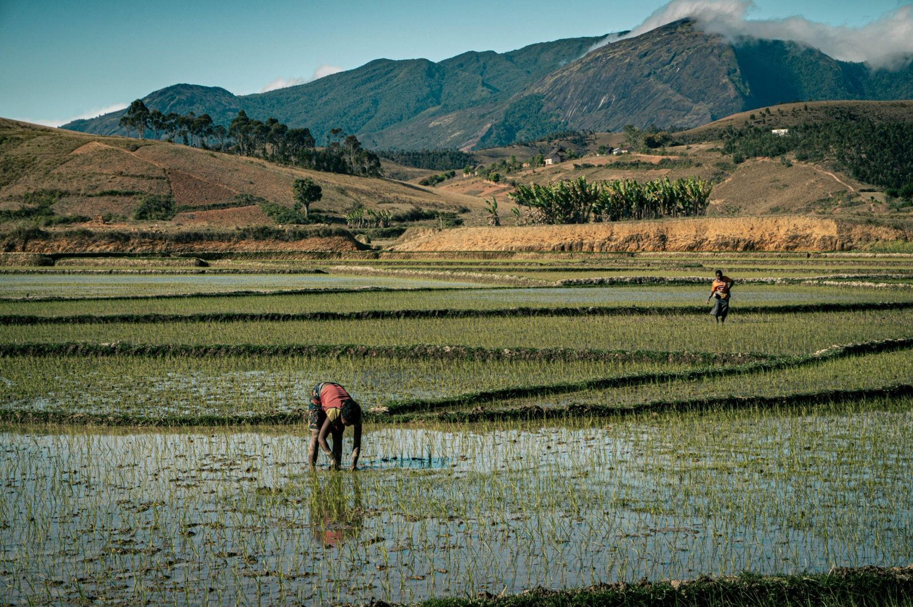
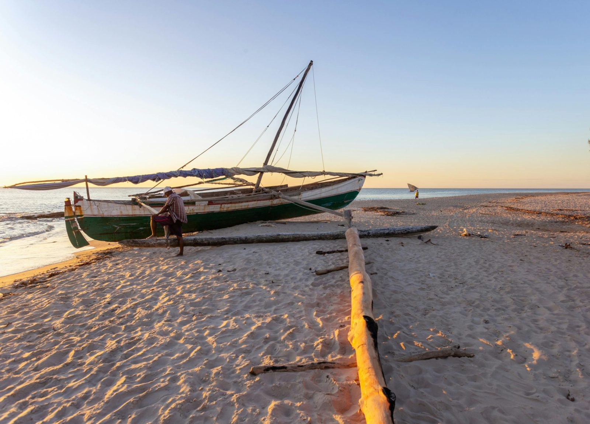

Richesse et pauvreté coexistent de manière frappante sur la grande île.
VOIR PIB Madagascar
À Madagascar, les familles pauvres vivent avec des ressources très limitées et des conditions de vie difficiles. Elles ont un accès restreint à la nourriture, à l’éducation et aux soins, ce qui les rend très vulnérables.

La jeunesse à Madagascar est nombreuse, motivée, mais confrontée au manque d’emplois et de moyens pour étudier. Elle cherche malgré tout des solutions pour avancer, surtout à travers les études, les petits métiers et l’informatique.

À Madagascar, le chômage est élevé et beaucoup de personnes n’ont pas d’emploi stable, ce qui les pousse vers des petits travaux mal payés. Le salaire minimum reste très bas (autour de 200 000 ariary par mois), insuffisant pour vivre correctement.
Voici une courbe interactive du PIB de Madagascar basée sur les données de la Banque mondiale de 1980 à 2024.

Le PIB s'élevait à 17,6 milliards de dollars en 2024, contre environ 5 Md$ en 1980, soit une multiplication par 3,4 en valeur nominale. Le taux de croissance était de 3,8 % en 2025 selon le FMI, signalant une reprise progressive. Le PIB par habitant ne dépasse pas 448 dollars en 2023, représentant seulement 4 % de la moyenne mondiale, signe que la croissance n'a pas suffi à compenser l'explosion démographique.


Madagascar est riche en ressources maritimes avec une grande diversité de poissons et une pêche importante pour l’alimentation et l’économie. Son agriculture produit du riz, de la vanille et d’autres cultures tropicales essentielles, même si elle reste peu modernisée. Le pays possède aussi une faune unique au monde, comme le maki, symbole de sa biodiversité exceptionnelle mais fragile.